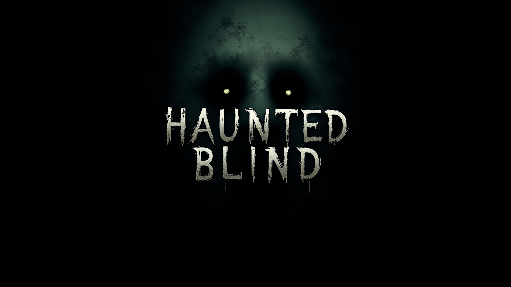
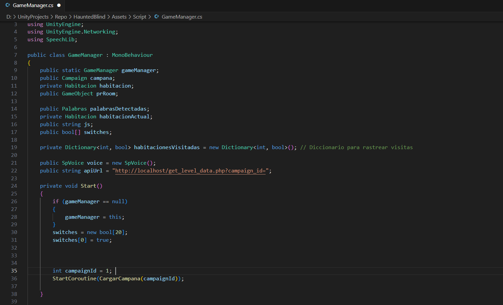
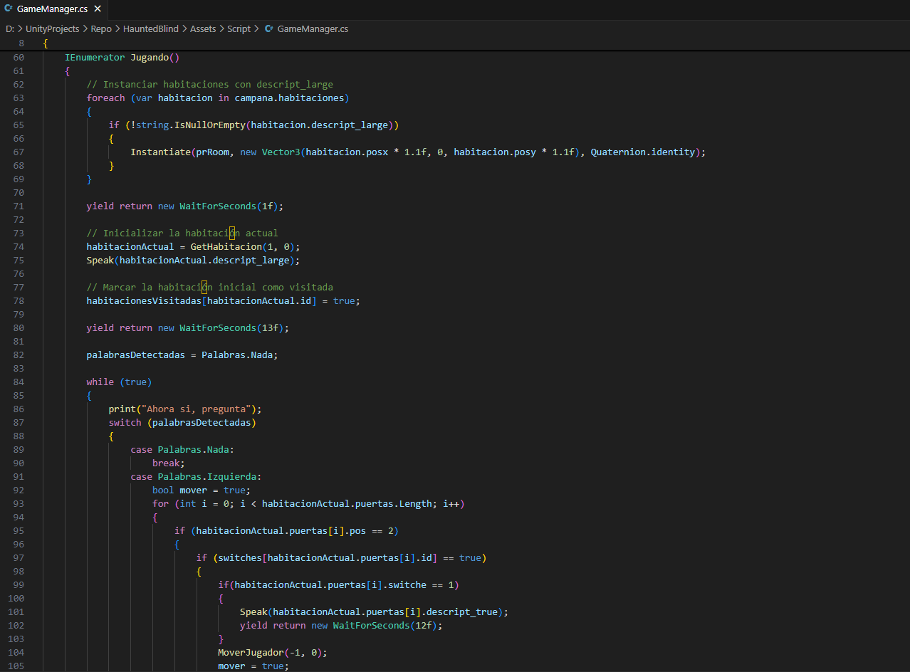

Haunted Blind es un juego diseñado para personas con discapacidad visual, donde el objetivo es escapar de un lugar abandonado. El proyecto busca ofrecer una experiencia de terror inmersiva mientras el jugador explora distintos mapas, los cuales podrán ser creados por la comunidad en el futuro.
Imágenes


×

Participación
En el desarrollo del juego, me encargué de programar la lógica de interacción speech-to-text, permitiendo que los jugadores exploren los mapas mediante comandos de voz. La integración del sistema JSON y la página web estuvo a cargo de mis compañeros de la carrera de Comunicación y Entretenimiento Digital.